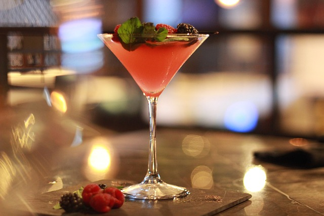

Bebidas de Bartender
#1. Receta de Margarita
The Margarita is a popular cocktail in North America. However, its drink's origin is less certain. The classic Margarita combines the tang of lime and the sweetness of orange liqueur with the distinctive strength of tequila to create a perfect blend. Any day is a wonderful day to sip a margarita, and it's especially true on Cinco de Mayo.
Ingredientes para el margariteo:
- 2 oz de tequila
- 1/2 oz de licor de naranja
- 1 onza de zumo de lima, recién exprimido
- 1/2 onza de sirope de agave
- Guarnición: rueda de lima, sal kosher (opcional)
Procedimiento para preparar un margarita:
- Prepare un borde salado (envuelva el borde de un vaso en sal)
- Combine el tequila, la naranja, el licor, el zumo de lima y el sirope de agave en una coctelera llena de hielo y agite hasta que esté bien frío.
- Colar en un vaso de roca o en un vaso old-fashioned sobre hielo fresco.
- Utilice una rodaja de lima para decorar
Consejos para preparar un margarita:
- Agitar, nunca remover, un margarita
- Utilice siempre tequila 100% de agave
#2. RECETA DE MARTINI

El Martini es uno de los cócteles clásicos. Es lo más tradicional que se puede hacer en materia de cócteles. El Martini clásico contiene partes iguales de ginebra, vermut seco y dulce; Sin embargo, no todos los Martini se hacen iguales.
Ingredientes del Martini:
- 2 onzas de ginebra
- 1/2 onza de vermut seco
- 1/2 onza de vermut dulce
- Utiliza un giro de limón o aceitunas para decorar.
Procedimiento para preparar un Martini:
- Prepare todos los ingredientes.
- Vierta la ginebra y los dos vermuts en un vaso mezclador con hielo.
- Removedor bien durante al menos 30 segundos.
- Cuele en una copa de cóctel frío y adorna con una aceituna o un twist de limón.
Consejos para preparar un Martini:
- Agitar la ginebra con vermut seco en una coctelera puede dañar el sabor de la ginebra, puede dar un poco de sabor amargo que es lo que mucha gente prefiere. En cambio, la agitación no estropea el vodka y conserva su sabor después de agitarlo.
- Agitar con hielo hace que el agua derretida se combine con el vodka o la ginebra, diluyendo la bebida.
- Prepare una copa de cóctel fría y asegúrese de enfriar todo el alcohol antes de preparar el martini.
- Utilice vodka o ginebra de alta calidad para lograr el mejor sabor.
#3. RECETA A LA ANTIGUA USANZA
El cóctel old-fashioned es uno de los verdaderos clásicos. Esta bebida existe desde principios del siglo XIX, mucho antes de que las palabras "clásico" y "cóctel" se utilizaran juntas. Es un cóctel creado para los amantes del whisky, y se prepara con whisky, azúcar, amargo de Angostura y una cáscara de naranja (o cereza al marrasquino) para decorar.
Ingredientes a la antigua usanza:
- 1,5 oz. de bourbon o whisky de centeno
- 1 terrón de azúcar
- 2 chorros de amargo de Angostura
- 1 cucharadita de agua
- 1 rodaja de naranja o cereza de cóctel
Procedimiento para preparar un Old Fashioned:
- En un vaso old-fashioned, ponga el terrón de azúcar y cúbralo con amargo de Angostura.
- Añadir una cucharada de agua y mezclar hasta que el terrón de azúcar se disuelva.
- Llene un vaso hasta la mitad con hielo y añada el whisky.
- Adornar con una rodaja de naranja y una cereza opcional.
Consejos para preparar un Old Fashioned:
- La versión clásica incluye bourbon, pero otros tipos de whisky, como el whisky de centeno, el whisky escocés y el brandy, se utilizan con frecuencia en su lugar porque carecen de los tonos de vainilla y caramelo que han hecho famoso al bourbon.
- Si no se dispone de terrones de azúcar o no hay suficiente tiempo o espacio para mezclar, se puede sustituir el terrón de azúcar por 0,75 onzas de jarabe simple.
#4. RECETA DE BLOODY MARY
El Bloody Mary es la bebida salada más popular del mundo, con un equilibrio de sabores dulces, salados, ácidos y umami que ninguna otra bebida puede igualar.
Ingredientes del Bloody Mary:
- 2 onzas de vodka
- 4 onzas de zumo de tomate
- 2 cucharadas de rábano picante molido
- 2 pizcas de salsa Tabasco
- 2 chorros de salsa Worcestershire
- 1 pizca de pimienta negra molida
- 1 pizca de pimentón ahumado
- Sal de apio
- Guarnición: ramita de perejil
- Guarnición: aceitunas verdes
- Guarnición: gajo de lima
- Guarnición: tallo de apio
Procedimiento para preparar un Bloody Mary:
- Espolvorear un poco de sal de apio en un plato pequeño.
- Frote el lado jugoso de la rodaja de limón o de la cuña de lima por el borde de un vaso de cerveza.
- Pase un rodillo por el borde exterior con sal hasta que quede uniformemente cubierto. Llene un vaso frío hasta la mitad con hielo y resérvalo.
- Exprime los limones y las limas en una coctelera y añádelos.
- Combine todos los ingredientes: añada el vodka, el zumo de tomate, el rábano picante, la salsa Tabasco, la salsa Worcestershire, la pimienta negra, el pimentón y una pizca de sal de apio junto con el hielo. Agítelo suavemente.
- Colar en el vaso highball preparado.
- Adorne el vaso con una ramita de perejil, aceitunas verdes, un trozo de lima y un tallo de apio (opcional).
Consejos para preparar un Bloody Mary:
- Puede utilizar cualquier salsa picante, sin embargo, Tabasco es la opción preferida.
- Las guarniciones pueden ser de todo tipo, incluyendo queso, verduras en escabeche y palitos de carne.
- Para disfrutar de la mejor experiencia posible para los huéspedes, sírvalo con un vaso de cerveza.
#5. RECETA DE GIN TONIC
The gin and tonic is a popular cocktail that is easy to make and both light and tasty. It's a simple mixed drink that just calls for the two specified ingredients and a dash of lime, all of which are natural flavor partners. This is a fantastic beverage for happy hour, dinner, or any other time you just want something refreshing.
Ingredientes del Gin Tonic:
- 2 onzas de ginebra
- De 4 a 6 onzas de agua tónica, al gusto
- Utiliza una cuña o rodajas de lima, para decorar
- Cubitos de hielo
Procedimiento para preparar un Gin Tonic:
- En un vaso alto, añada hielo y ginebra.
- En un vaso highball lleno de cubitos de hielo, combine la ginebra y la tónica.
- Remover suavemente para combinar, pero no tanto como para perder la carbonatación.
- Adorne con una cuña de lima o rodajas de lima, y sirva.
Consejos para preparar un gin-tonic:
- Una cuña de lima suele servirse con el gin-tonic, y es una forma estupenda de añadir un toque de cítricos. Exprime el zumo en la bebida pasando la cuña por el borde del vaso y dejando caer la cuña.
- Utilice botellas de tónica recién abiertas y bien refrigeradas para obtener el mejor resultado.